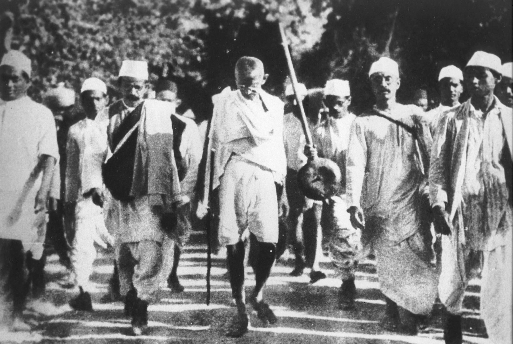

Mahatma Gandhi
The father of non-violent resistance

Gandhi during the salt march. Colonial law gave monopoly on salt collection in India to British citizens only.
Timeline
- 1869 - Born in Porbandar.
- 1888 - Leaves India to study law in London.
- 1893 - Moves to South Africa to be the lawyer for an Indian client.
- 1894 - Starts a political campaign against a bill giving only Europeans in South Africa the right to vote.
- 1900 - Volunteers in the Boers wars on the side of the British.
- 1906 - When the Zulu war breaks out, he organises a team of medics to treat wounded soldiers from both sides.
- 1915 - Returns to India.
- 1919 - British pass the Rowlatt Act. Gandhi calls for civil disobedience.
- 1919 - Hundreds of peaceful Indian civilians are massacred (Jallianwala Bagh massacre). Gandhi calls for Indians to react non-violently and goes on hunger strike.
- 1920 - Takes leadership of congress.
- 1922 - Imprisoned.
- 1930 - Goes on a 24 day march to recollect salt, breaking British monopoly laws on salt and sparking large scale civil obedience.
- 1930 - Indian National Congress declares Independence of India, unrecognised by the British.
- 1947 - British grant Independece to India.
- 1948 - Gandhi is shot by a Hindu extremist.